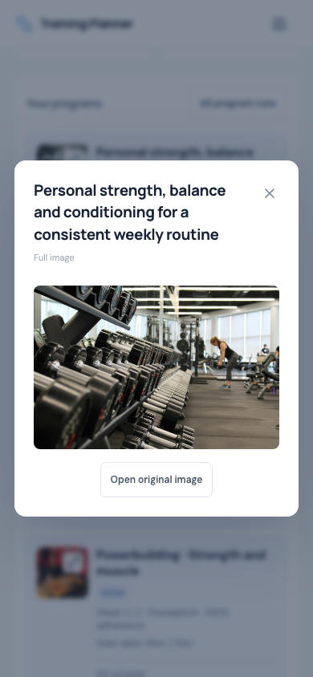
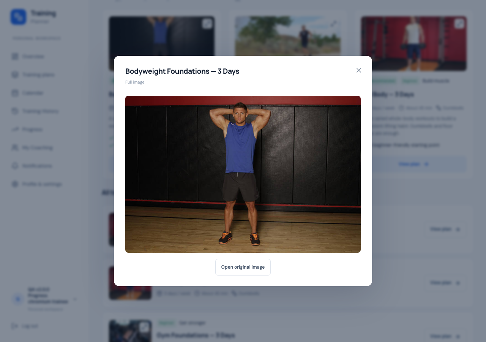

Training Planner · 2 November 2026
v2.3.7 — Full image previews
SOURCE VERIFIED — DEPLOYMENT PENDING
Click or tap plan and program thumbnails to see the complete,
uncropped image.
Behavior
Thumbnails now show an expand icon and open the existing
accessible modal. This covers Personal Overview, Personal and
Coach Progress, personal plans, Coach templates, assigned plans,
recommendations and the full catalog.
The preview fits the full stored image within the screen. Open
original image opens that file in a separate browser tab. Close
with the X, Escape or backdrop; focus returns to the thumbnail.
Missing images use the existing fallback.
Program cards now have a separate thumbnail button and program
links, avoiding nested interactive controls and accidental
navigation. The recent responsive card layout is preserved.
Existing media files are reused without uploads or copies.
Verification
Chromium and WebKit passed 266 checks across image previews,
keyboard interaction, native modal background isolation, focus
return, original-image tabs, fallback images, card layout and
the full workout/program lifecycle. Responsive checks covered
320 × 480, 360, 375, 390, 430, 768 and 1280 widths. No physical
phone test is claimed.
614 SQLite tests (12,064 assertions), 38 JavaScript tests, the
production build, Pint, Prettier, Composer validation/audit and
diff checks passed. This update changes only frontend behavior
and browser checks; no PHP, database schema or dependency
changes. MySQL was last verified by the full v2.3.6 baseline
suite.
Local QA cleanup removed eight disposable accounts and 146
generated images; original fingerprints across 22 tables and 44
media files match.
Verification evidence
Mobile preview

Desktop preview

Release and deployment
Source verification is complete. Fresh backups, immutable
release deployment, live checks and original-data integrity
evidence will be recorded here before declaring deployment
complete.